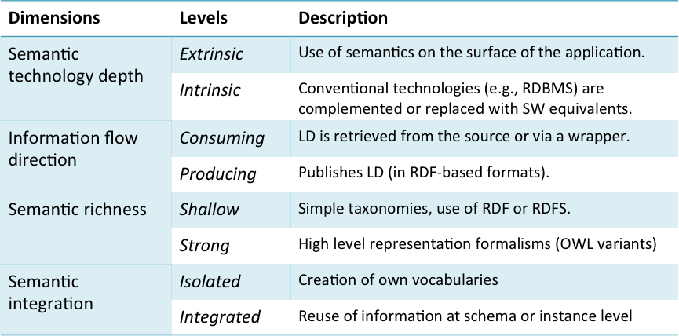

Any Linked Data application can be expected to have three parts: Linked Data manager, Linked Data consumer and (Web) User interface. First, the Linked Data Consumer is in charge of retrieving Linked Data from data sources. In cases where the retrieved data is not in the RDF format, wrappers can be used to translate the data into Linked Data. Systems that only consume Linked Data are usually called mashups. Second, the Linked Data consumer is responsible for manipulating the consumed Linked Data in order to produce new Linked Data. Third, the User interface provides a way of interacting with the application. This will often, but not necessarily, be a Web interface. The application may include a user interface supporting, for example, visualization of the data and also an API for programmable interaction with the system.
Linked Data applications themselves can be classified into three main types [1, 2]. First, Linked Data browsers consume Linked Data and present them in a way that allows the users to navigate them. Examples of Linked data browsers such as Sig.ma and Sindice were introduced in Section 10 of Chapter 4. A second category is Linked Data search engines. Unlike conventional search engines that are primarily seen as a means for locating human-readable content, a semantic search engine is used to search for ontologies, vocabularies and RDF documents. Semantic search engines such as Swoogle and Watson were described in section 22 of chapter 4. The third category is Domain-specific Linked Data applications. The Linked Data music application discussed throughout the chapters is one example of a domain-specific application. These applications are built to address a particular range of problems within a specified domain. The vast majority of Linked Data applications fall into this third category. Later in the chapter we will see some examples from different domains.
Linked Data applications can also be categorised on dimensions that describe various technical aspects as to how Linked Data is represented and used (see Figure 2). Linked Data applications can use Semantic Web technologies in a way that is extrinsic or intrinsic. If Semantic Web technologies are extrinsically used, then Linked Data is consumed and processed using APIs. Traditional technologies, such as Relattional Database Management Systems (RDBMS) can be used for internal storage and processing. An application may also make intrinsic use of Semantic Web technologies, for example, storing the internal state of the application in a triplestore rather than using RDBMS. A single application may also combine components that make intrinsic and extrinsic use of Semantic Web technologies.
A Linked Data application can also be classified as to whether it consumes Linked Data, produces Linked Data or both. As described earlier, a Linked Data application that only consumes Linked Data can be more appropriately described as a mashup. Applications can also vary in terms of their semantic richness. A relatively shallow representation of semantics may be used, incorporating for example simple taxonomies. For shallow semantics, the RDF and RDFS vocabularies would probably suffice, as they enable the expression of class hierarchies, class membership and properties. Strong semantic richness, expressing more complex relationships between resources would require a representational formalism such as one of the variants of OWL (Web Ontology Language).
Linked Data applications can also be classified as to whether they are isolated from, or integrated with, external vocabularies. A Linked Data application that used its own vocabulary, distinct from other available datasets would be described as being isolated. As described in Chapter 3, Linked Data should wherever possible reuse existing vocabularies or express relationships (for example using owl:sameAs) to other published vocabularies. An application that extensively reuses and interlinks vocabularies would be described as an integrated application. Even an isolated application could become integrated if the vocabulary used within the application is published, and this vocabulary is used to interlink this dataset with others.

Figure 2: Categorisation of Semantic Web Applications [2].